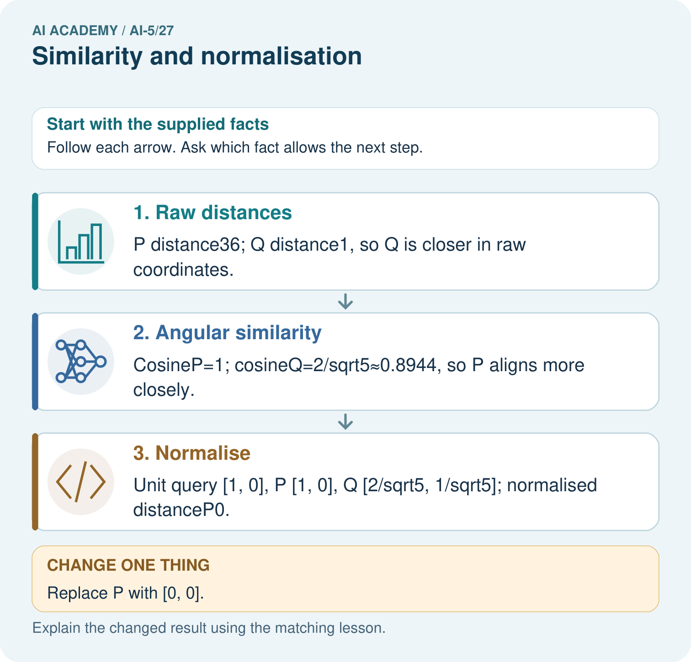

AI Academy · Level 5 · Grade 10 · Week 27 · Student lesson
Similarity and normalisation
Learn to understand, design, build, test and explain AI systems responsibly.
Project: Image-pattern Network Investigation
Before you start
For query [3, 4] and candidate [3, 0], calculate squared Euclidean distance. Does a smaller distance prove equivalent meaning?
Plan time to read, investigate and explain. Keep predictions separate from observations.
Student lesson · 1 of 16
Your mission
Your learning target
I can calculate vector length and normalise a nonzero vector.
I can compare squared distance with cosine similarity and explain a changed ranking.
I can handle zero vectors explicitly and justify what information a comparison keeps.
Remember before reading
Close your notes first. A rough first answer helps us choose the right starting point; it is not a score for your ability.
Without opening the old lesson, explain one key idea from Embeddings and neighbourhoods. Give an example and a mistake that the idea helps you avoid.
Without opening the old lesson, explain one key idea from Augmentation and leakage. Give an example and a mistake that the idea helps you avoid.
Without opening the old lesson, explain one key idea from Convolution as a local operation. Give an example and a mistake that the idea helps you avoid.
After trying, check the relevant lesson or ask your teacher. Change the part of your explanation that the evidence shows was wrong.
This week you will practise:
Calculate vector length and normalise a nonzero vector
Compare squared distance with cosine similarity and explain a changed ranking
Handle zero vectors explicitly and justify what information a comparison keeps
Retrieve what you already know
For query [3, 4] and candidate [3, 0], calculate squared Euclidean distance. Does a smaller distance prove equivalent meaning?
This week’s end goal
By the end, I can explain similarity and normalisation using a traced example and a stated limitation.
Student lesson · 2 of 16
Notice the evidence
Last week, a neighbourhood depended on a chosen distance rule. This week, compare the same fictional vectors in two ways. Squared distance rewards nearby coordinates. Cosine similarity compares direction and ignores positive changes in length. Neither rule is automatically right for every task.
| Vector | Coordinates | Length |
|---|---|---|
| Query Q | [3, 4] | 5 |
| Candidate A | [6, 8] | 10 |
| Candidate B | [3, 0] | 3 |
| Candidate C | [-3, -4] | 5 |
For Q, length = square root of (3 squared + 4 squared) = square root of 25 = 5. Divide both components by 5 to get its unit vector [0.6, 0.8]. Its length is one because 0.6 squared + 0.8 squared = 1. A becomes the same unit vector. C becomes [-0.6, -0.8], pointing in the opposite direction.
These supplied coordinates are for arithmetic practice. They are not learned language embeddings. Normalising each row keeps its direction but removes its original length unless that length is saved separately.
Student lesson · 3 of 16
See how it works
Multiply matching components and add to obtain the dot product. Cosine similarity equals dot(Q, candidate) divided by (length(Q) times length(candidate)). Higher cosine means a closer direction. For A, the dot product is 3 times 6 + 4 times 8 = 50, so cosine = 50 / (5 times 10) = 1. For B it is 9 / 15 = 0.6; for C it is -25 / 25 = -1.
from math import sqrt
def unit(v):
if not v:
raise ValueError("Need a nonempty vector")
length = sqrt(sum(x*x for x in v))
if length == 0:
raise ValueError("Zero vector has no direction")
return [x / length for x in v]
def cosine(a, b):
if len(a) != len(b):
raise ValueError("Need matching dimensions")
ua, ub = unit(a), unit(b)
return sum(x*y for x, y in zip(ua, ub))
q = [3, 4]
for name, v in [("A", [6, 8]), ("B", [3, 0]),
("C", [-3, -4])]:
print(name, round(cosine(q, v), 6))Trace before running: A gives 1, B gives 0.6 and C gives -1. This classroom code assumes finite, moderate numeric inputs. It rejects empty, unequal-length and zero vectors. Keep full precision for decisions; rounding here is only for display. Cosine lies between -1 and 1 in exact arithmetic and is not a probability.
Connect the picture and the explanation
Point to the input, the deciding step and the result in this week’s visual. Explain the same step in ordinary words. A picture helps when you can say what each part represents.
Student lesson · 4 of 16
Compare the cases
Compare a familiar case with a changed case
For query Q, write the raw squared distances and cosines to A, B and C from the lesson. Name the winner under each rule. Calculate squared distances after normalising both sides and check the relationship to cosine.
Change one thing in the pictured case
Change: Replace P with [0, 0].
Prediction: Cosine and unit normalisation for P are undefined.
Reason: The zero vector has norm0, so dividing by its norm is invalid.
Student lesson · 5 of 16
Words that unlock the idea
| Word | Meaning |
|---|---|
| Vector length | The square root of the sum of squared components, also called the L2 norm |
| L2 normalisation | Dividing every component of a nonzero vector by its length |
| Cosine similarity | The dot product of two nonzero vectors divided by the product of their lengths |
| Unit vector | A vector with length one |
Student lesson · 6 of 16
Follow a worked example
Compare the same candidates using two rules
After normalising both Q and every candidate, squared distances to A, B and C are 0, 0.8 and 4. For unit vectors, squared distance = 2 - 2 times cosine. Thus the smallest normalised distance and largest cosine produce the same ranking, including ties, in exact arithmetic.
Learn from the worked case
Cover the result before checking it. Say what is given, choose the procedure, and follow one step at a time. Then uncover the result and explain your first mismatch. Ask why a step is allowed, not only what number it produces.
A pictorial worked case: Similarity and normalisation
Compare angular alignment with raw distance on the same vectors.
The facts we will use
Query [2, 0]; P=[8, 0]; Q=[2, 1]. Nonzero vectors only; compare squared Euclidean distance and cosine.
All inputs and outcomes in this worked example are invented classroom data; no real model run is claimed.


Read the picture one step at a time
Why this result follows
Raw Euclidean distance includes differences in both direction and magnitude. Cosine compares direction using the vector lengths, so a long vector can align perfectly while being far away in raw coordinates. Declare which question your similarity measure answers. A zero vector has no direction and cannot be divided by its norm for cosine or unit normalisation.
What this example does not establish
Neither metric is universally right; choose it from the task and handle zero vectors explicitly.
Read the labelled picture: Why do the original two metrics select different winners? Point to the relevant step in the picture, then write the changed result and the rule or evidence that supports it.
Change one thing: Replace P with [0, 0]. Predict the result before checking the explanation. What remains the same?
Student lesson · 7 of 16
Find and repair a mistake
Suppose [3, 4] records counts of two event types, while [6, 8] records twice as many of each. Both have the same proportions and direction, but totals are 7 and 14. Normalisation makes their vectors identical. That may suit a question about proportions, but it removes information needed to compare total activity. For learned embeddings, the usefulness of length must be tested for the task.
The zero vector [0, 0] has no direction, so its cosine is undefined. Do not silently assign zero similarity: zero cosine already means perpendicular nonzero vectors. This lesson rejects a zero query and excludes zero candidates with an explicit report. If no valid candidates remain, return no comparison. PAD entries stay excluded by the mask; a real zero input needs its own policy.
Positive scaling preserves cosine: Q and 2 times Q have the same direction. Negative scaling reverses direction; Q and -Q have cosine -1. Candidate labels, self-exclusion and a stated floating-point tie tolerance are still required when retrieving neighbours.
Locate the earliest unsupported step
A candidate set contains Z [0, 0] and B [3, 0]. With nonzero query Q, what happens under this lesson’s zero-vector policy? What if Q is zero, or Z is the only candidate? Explain why replacing an undefined cosine with zero is misleading.
Student lesson · 8 of 16
Practise together
For Q [3, 4], A [6, 8] and C [-3, -4], give each length and unit vector. Explain one distinction that normalisation removes and one that it preserves.
Practise with less help: Compare the rankings
Use workbook W2 for the connected example “Similarity and normalisation”. First fill the input and rule boxes. Try the middle steps before asking for a hint. After a hint, try the next step yourself.
| Plan | Do | Check |
|---|---|---|
| What is given? Which rule or procedure applies? | Record each intermediate step. | Does the result follow? What remains unknown? |
Explain your trace to a partner. Your partner points to one step to check. Swap roles on the next case. Each person writes their own explanation.
Check your reasoning
Use the worked case for Similarity and normalisation. Proposed explanation: “Cosine is a probability”. Decide whether this explanation is supported. Point to the step or supplied fact that decides; explain your repair if needed.
Answer on your own before discussion. If you are unsure, say which step you need help with.
Explain the picture
Why do the original two metrics select different winners? Point to the relevant step in the picture, then write the changed result and the rule or evidence that supports it.
This is supported practice. Keep the separately named independent case for an attempt before feedback.
Student lesson · 9 of 16
Run the investigation
Predict, investigate and preserve the evidence
For query Q, write the raw squared distances and cosines to A, B and C from the lesson. Name the winner under each rule. Calculate squared distances after normalising both sides and check the relationship to cosine.
from math import sqrt
def unit(v):
if not v:
raise ValueError("Need a nonempty vector")
length = sqrt(sum(x*x for x in v))
if length == 0:
raise ValueError("Zero vector has no direction")
return [x / length for x in v]
def cosine(a, b):
if len(a) != len(b):
raise ValueError("Need matching dimensions")
ua, ub = unit(a), unit(b)
return sum(x*y for x, y in zip(ua, ub))
q = [3, 4]
for name, v in [("A", [6, 8]), ("B", [3, 0]),
("C", [-3, -4])]:
print(name, round(cosine(q, v), 6))| Record | Your evidence |
|---|---|
| Given input and fixed rule | |
| Prediction before checking | |
| Actual result, or “not run” | |
| First mismatch and one explanation | |
| Boundary or missing input and expected response |
On paper, trace the supplied procedure. If code is provided, predict before running it in a local practice file. Never write an expected answer as though it were an observed run.
Plan → try → check
Before trying: what do I expect, and why? While trying: which step could first go wrong? Afterwards: what did I actually observe, and what should change? Keep “not run” if you only traced the procedure.
Student lesson · 10 of 16
Build your understanding
Explain → apply → challenge
For Q [3, 4], A [6, 8] and C [-3, -4], give each length and unit vector. Explain one distinction that normalisation removes and one that it preserves.
A candidate set contains Z [0, 0] and B [3, 0]. With nonzero query Q, what happens under this lesson’s zero-vector policy? What if Q is zero, or Z is the only candidate? Explain why replacing an undefined cosine with zero is misleading.
For event-count vectors [3, 4] and [6, 8], what useful information can normalisation remove? A team chooses cosine because it improves results on the final evaluation set, then calls that same set independent evidence. Explain how to repair the evaluation plan.
Student lesson · 11 of 16
Connect your project
Add a labelled similarity and normalisation evidence sheet to Image-pattern Network Investigation. Show how you can calculate vector length and normalise a nonzero vector. Use the supplied fictional case and keep its inputs, intermediate steps, calculation or prediction, and limitation. Connect this record to last week’s record; a matching answer without a trace is insufficient.
| Project evidence | Record |
|---|---|
| Component and version | |
| Inputs permitted at prediction time | |
| Trace and comparison with earlier work | |
| Failure, limit and human review |
Evidence for your project
For your Image-pattern Network Investigation, save the input, procedure, observed result and limitation of this check. Label this worked example as practice; use a different, previously unreviewed case when checking independent understanding.
Student lesson · 12 of 16
Show what you know
L2 normalisation divides each individual vector by its own length; it does not estimate a mean or scale from a dataset. Feature standardisation is a different operation and must fit its statistics on training data only. Choose between raw distance and cosine using the task, training and validation evidence. Do not repeatedly change the rule after seeing final evaluation results.
Record the representation version, comparison rule, normalisation, zero-vector handling, candidate set and tie tolerance. Preserve a baseline and evaluate on the same reserved examples. Next week, transfer learning asks when a representation learned for one task can help another.
For event-count vectors [3, 4] and [6, 8], what useful information can normalisation remove? A team chooses cosine because it improves results on the final evaluation set, then calls that same set independent evidence. Explain how to repair the evaluation plan.
Student lesson · 13 of 16
Study a complete case
Complete evidence record
Compare the same candidates using two rules
Follow the input through the stated procedure to its result. Cover the result first, predict it, then explain every intermediate step. The text/table accompanies the figure so the example can be read without colour.
Student lesson · 14 of 16
Try a new case independently
Independent case: Compare a new case independently
Use query [5, 0] and candidates P [10, 0], R [4, 3] and S [0, 5]. Calculate all raw squared distances and cosines, name each winner, and give squared distances after normalising both query and candidates. Explain the changed ranking.
Attempt this case before feedback. Record any help. Earlier examples below are further practice; a case already practised with feedback cannot establish fresh transfer.
Attempt this without hints
Use query [5, 0] and candidates P [10, 0], R [4, 3] and S [0, 5]. Calculate all raw squared distances and cosines, name each winner, and give squared distances after normalising both query and candidates. Explain the changed ranking.
Record support used: none, hint or teacher explanation. After feedback, a different case is needed to demonstrate independence.
Use feedback to improve
Attempt the independent case before hints. Record whether you worked alone, used a hint or followed a model. After feedback, fix the first unsupported step and explain why it changed. A later check uses a changed case, not a copied answer.
Student lesson · 15 of 16
Your lesson route
Start with this question: Compare angular alignment with raw distance on the same vectors.
| By the end, I can | How I will show it |
|---|---|
| Calculate vector length and normalise a nonzero vector | Explain the deciding step, show a trace or test, and state one limit. |
| Compare squared distance with cosine similarity and explain a changed ranking | Explain the deciding step, show a trace or test, and state one limit. |
| Handle zero vectors explicitly and justify what information a comparison keeps | Explain the deciding step, show a trace or test, and state one limit. |
Remember → watch and explain → try with help → investigate → try independently → keep project evidence. Your teacher may spread this lesson across several classes.
Keep your first prediction. Compare it with what the evidence shows and explain any change.
Student lesson · 16 of 16
Finish and return
Close your notes. Explain this goal in your own words: Calculate vector length and normalise a nonzero vector
If you are unsure, return to the worked picture and explain one arrow. If you are ready, change an input or assumption and justify your prediction.
Save your workbook evidence. At the next review, try a different case before opening your old answer.